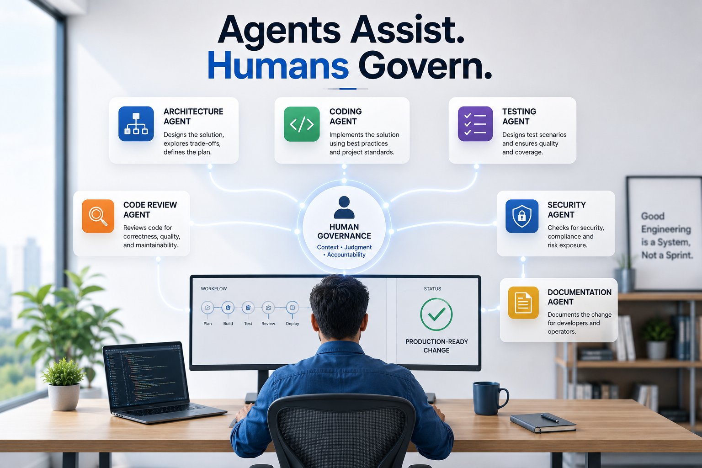

Most people begin their AI journey with a simple pattern: open one assistant, ask a question, get an answer, and maybe copy some code. That is a useful starting point, especially when the task is small, isolated, and low risk. But serious software engineering does not work as one simple activity. It involves understanding the requirement, designing the solution, evaluating trade-offs, changing the codebase, writing tests, reviewing risks, checking security, updating documentation, and finally deciding whether the change is ready for production. When one AI assistant is asked to do all of this, the boundaries become unclear. The same assistant starts acting as architect, developer, reviewer, tester, documentation writer, and decision-maker.
That may work for a small script or a personal experiment, but it is not how good engineering teams work. In real software teams, responsibilities are separated. Architects, developers, reviewers, testers, product owners, security specialists, and engineering managers may collaborate closely, but they do not all play the same role. That separation is not bureaucracy for its own sake. It exists because different activities need different kinds of thinking. Designing a solution is not the same as implementing it. Writing code is not the same as reviewing it. Testing behavior is not the same as proving that code compiles. Approving a production release is not the same as generating a working diff.
I believe AI-assisted software engineering should follow the same principle. Instead of using one AI assistant for everything, we can create a multi-agent engineering workflow. One agent helps with architecture. Another helps with implementation. Another reviews the code. Another thinks through test scenarios. Another checks security and compliance. Another helps with documentation. And the human engineer governs the entire process. This is the shift from using an AI assistant to building an AI software engineering system.
From AI Assistant to AI Engineering System
In one of my earlier articles, I wrote about the idea of an AI software engineering system. The important word here is “system.” A system is not a random collection of prompts. A system has roles, inputs, outputs, boundaries, checkpoints, and feedback loops. The same applies to AI-assisted development. If we use AI casually, we may get quick answers. But if we want to use AI seriously in software engineering, especially in enterprise environments, we need more structure.
A mature AI engineering workflow should answer a few basic questions before implementation begins. Who is responsible for design? Who writes the code? Who reviews the code? Who checks test coverage? Who looks at security and compliance? Who updates documentation? Who decides whether the change is production-ready? AI can support many of these activities, but it should not own all decisions. That is where the multi-agent model becomes useful. It gives each assistant a role, and more importantly, it gives the human engineer a way to control the workflow instead of being overwhelmed by AI-generated output.
The goal is not to create a circus of agents throwing opinions at each other. That would be a productivity nightmare wearing a futuristic hat. The goal is to create a disciplined workflow where every agent has a clear responsibility and every handoff produces a useful artifact. When used well, multiple AI agents can behave less like random chat windows and more like specialized members of an engineering team.
What Do I Mean by an AI Agent?
The word “agent” is used in many different ways. Sometimes people use it to describe a fully autonomous AI system that can plan, act, call tools, make decisions, and continue working without human involvement. That is not the meaning I am using here. For software engineering, I prefer a more practical definition: an AI agent is a role-based assistant with a specific responsibility, clear inputs, expected outputs, and boundaries.
In this sense, an agent does not need to be fully autonomous. It may simply be a carefully instructed assistant that performs one engineering role. An architecture agent helps think through design. A coding agent implements a bounded change. A test design agent identifies meaningful test scenarios. A code review agent reviews the diff. A security agent checks risk. A documentation agent explains the change. The human governance layer makes the final decision.
This framing keeps the workflow practical. The goal is not to hand over software delivery to an uncontrolled group of AI assistants. The goal is to use AI with engineering discipline. In fact, the more capable these tools become, the more important discipline becomes. Powerful tools without boundaries do not automatically create better engineering. They often just create faster chaos.
Why One AI Assistant Is Not Enough
One AI assistant can do a lot. It can explain a concept, generate code, write tests, summarize logs, create documentation, and even review a solution. The problem is not capability. The problem is role confusion. When one assistant is asked to design, implement, review, and approve the same change, there is no separation of concerns. The assistant may make design assumptions and then implement those assumptions without making them visible. It may write code that looks correct but does not fit the existing architecture. It may generate tests that confirm its own implementation instead of testing the real business behavior. It may review the code too positively because it is reviewing the same approach it helped create.
This is one of the biggest risks of AI-assisted development: AI makes it very easy to generate code before the thinking is complete. Fast code is not the same as correct design. If the design is weak, AI simply helps us implement the wrong thing faster. This is especially risky in enterprise systems, where a change may affect security, compliance, auditability, performance, supportability, and customer trust. In domains such as banking and payments, working code is only the beginning. A solution must also be reliable, secure, observable, maintainable, and operationally supportable.
That is why role separation matters. A multi-agent workflow gives us a way to slow down the right parts of the process and speed up the right parts. We can slow down design thinking, trade-off analysis, security review, and governance. We can speed up implementation, test generation, documentation drafting, and repetitive review tasks. That balance is where AI becomes genuinely useful.
The Multi-Agent Software Engineering Model
A practical multi-agent workflow can be imagined like this:
Human Intent
↓
Architecture Agent
↓
Design Brief
↓
Coding Agent
↓
Code Changes
↓
Test Design Agent
↓
Test Plan
↓
Test Execution / Debugging Agent
↓
Test Results
↓
Code Review Agent
↓
Review Report
↓
Security / Compliance Agent
↓
Risk Report
↓
Documentation Agent
↓
Updated Documentation
↓
Human Governance Gate
↓
Production-ready ChangeThis may look heavy at first, but we do not need every agent for every change. For a small internal refactoring, a coding agent and review agent may be enough. For a customer-facing API change, we may need architecture, coding, testing, review, security, documentation, and governance. For a banking or payments system, the bar is even higher because even small changes can have operational, audit, or compliance implications. The key is not to use all agents all the time. The key is to scale the workflow based on risk.
This is similar to how engineering teams already operate. Not every change needs a full architecture review, security review, release review, and documentation cycle. But some changes absolutely do. AI agents should follow the same principle. The workflow should be lightweight for low-risk changes and more structured for high-risk changes.
The Architecture Agent
The architecture agent helps before implementation starts. This is the thinking partner. I would use this role when the problem is still ambiguous or when the solution may affect multiple parts of the system. The architecture agent helps clarify the real business problem, identify system boundaries, understand impacted services or modules, explore design options, define API contracts, identify data model changes, evaluate failure scenarios, and think through observability, rollback, and operational behavior.
This agent should not jump into code. Its output should be a design brief or implementation plan. For example, if we are adding a new customer onboarding capability, the architecture agent should help define the API contract, data flow, validation rules, error handling, idempotency requirements, event publishing, audit needs, and observability expectations. The architecture agent is useful because it slows us down before we speed up. That may sound strange, but it is important. In software engineering, going fast in the wrong direction is expensive.
A good architecture agent should also be comfortable saying, “This requirement is not clear enough.” That is a useful output. It is much better to expose ambiguity early than to hide it behind generated implementation. In many real projects, the biggest problems do not come from developers failing to write code. They come from teams implementing unclear requirements with confidence.
The Coding Agent
The coding agent works inside the codebase. This is where tools like Claude Code, GitHub Copilot, Cursor, or other coding assistants can be useful. The coding agent can locate relevant files, understand repository structure, follow existing code patterns, make implementation changes, add tests, run build commands, fix compiler errors, and summarize the diff. This is the agent that turns an approved plan into code.
However, I do not like giving a coding agent vague instructions such as “add this feature.” That gives the coding agent too much design authority. Instead, I prefer to give it a bounded implementation brief. For example, I may ask it to implement a customer onboarding status API based on an approved design, follow existing controller-service-repository patterns, avoid introducing new frameworks, reuse existing exception handling, add tests, keep the diff focused, and explain every file changed.
This changes the nature of the interaction. The coding agent is no longer randomly designing and implementing. It is implementing within a reviewed boundary. That boundary matters because AI coding assistants are often very eager. They may refactor more than needed, introduce abstractions too early, or “improve” unrelated parts of the codebase. The coding agent should be productive, but not uncontrolled. The human engineer should still review the diff carefully.
The Test Design Agent
Testing requires a different mindset from coding. A coding agent may write tests, but it may also create tests that closely follow the implementation. Such tests may pass but still miss important behavior. That is why a separate test design agent is useful. The test design agent thinks like a quality engineer. It asks what behavior needs to be proven, what failure paths should be checked, what boundary conditions exist, what validation rules matter, what regression areas are risky, and what backward compatibility expectations must be preserved.
For example, for a customer onboarding API, the test design agent may identify cases such as valid customer ID returning onboarding status, unknown customer ID returning the correct error, unauthorized users being blocked, pending onboarding showing pending actions, completed onboarding showing completion timestamp, internal workflow state names not being exposed, logs not containing sensitive data, and the API response remaining backward compatible. These scenarios are not just technical tests. They represent business behavior, security expectations, and operational safety.
This kind of thinking improves quality because it separates test planning from implementation. The coding agent may still write the actual test code, but the test design agent helps define what should be tested. This prevents the common AI failure mode where tests are generated mainly to satisfy the implementation rather than to challenge it.
The Test Execution and Debugging Agent
The test execution and debugging agent is different from the test design agent. The test design agent asks, “What should we test?” The test execution and debugging agent asks, “What failed, why did it fail, and what is the smallest safe fix?” This agent is useful after implementation starts. It can run build commands, run unit tests, run integration tests, summarize failures, inspect stack traces, identify likely root causes, suggest minimal fixes, and re-run tests after changes.
The important rule is that this agent should not make broad unrelated changes. When tests fail, AI assistants sometimes try to fix too much. A small test failure can turn into a large refactoring if the agent is not bounded. That is why I prefer instructions such as: analyze the test failure, explain the root cause, suggest the smallest fix, do not refactor unrelated code, do not change the public API, do not weaken the test, and do not remove assertions just to make the test pass.
This protects the workflow from accidental overcorrection. A good debugging agent should be boring in the best possible way. It should not be creative when the problem needs discipline. It should explain, isolate, fix minimally, and verify.
The Code Review Agent
The code review agent acts like a senior engineer reviewing the change. This agent should be skeptical. Its job is not to praise the implementation. Its job is to find problems. It should review for correctness, maintainability, readability, error handling, validation, logging, observability, test quality, security concerns, unnecessary complexity, and consistency with existing patterns.
A useful code review agent should answer questions such as: Does the implementation match the design brief? Are any assumptions hidden in the code? Are errors handled consistently? Are tests meaningful? Is the code easy to maintain? Are there unexpected side effects? Is the diff too broad? Does the change introduce avoidable risk? These are the questions a good human reviewer would ask, and the AI review agent can help surface them earlier.
However, the review agent should not replace human review. It assists the human reviewer. It may find issues quickly, but it may also miss domain-specific risks. It may misunderstand business rules. It may approve something that is technically clean but operationally risky. The human reviewer must still think. AI review is useful, but “the AI said it looks good” is not an engineering control.
The Security and Compliance Agent
For enterprise systems, especially in domains such as banking and payments, security and compliance cannot be treated as an afterthought. A separate security and compliance agent can review the change from a risk perspective. It can check authentication impact, authorization rules, sensitive data exposure, logging risks, input validation, error message safety, dependency changes, audit requirements, data retention concerns, and compliance implications.
This agent matters because a normal code review agent may say the implementation looks clean, while a security agent may ask whether customer identifiers are being logged, whether the endpoint is properly authorized, whether internal workflow states are exposed, whether error messages reveal too much, and whether audit logging is required. That difference matters. Security review is not just another style check. It is a different lens.
The security agent should be especially strict about sensitive information. It should never assume security is out of scope. A good instruction for this agent is to review the change from a security, privacy, compliance, and audit perspective, avoid focusing on code style unless it creates security risk, identify blocking concerns separately from recommendations, and call out assumptions clearly. This kind of review is valuable because engineering teams often focus first on functionality. The security agent forces a different lens before the change moves forward.
The Documentation Agent
Documentation is often delayed until the end, and sometimes it is treated as a formality. AI can help here, but documentation should not be generated blindly. The documentation agent should work from the approved design brief, implementation summary, and actual code changes. It can help create API documentation, README updates, release notes, operational notes, configuration documentation, migration steps, troubleshooting notes, and developer onboarding notes.
For example, if a new API has been added, the documentation agent can produce the endpoint description, request parameters, response structure, error codes, authentication requirements, example requests and responses, and operational considerations. This is useful because many engineering changes fail not only because the code is wrong, but because the change is not understandable to the people who need to use, support, or operate it.
The documentation agent should not invent behavior. It should only document what has actually been implemented and approved. A useful guardrail is to tell the agent not to document behavior unless it is present in the design brief or implementation summary, and to call out missing information instead of assuming it. This keeps the documentation honest.
The Human Governance Layer
The most important role in this workflow is not an AI agent. It is the human governance layer. The human engineer is not just a prompt writer. The human engineer owns judgment. The human decides whether this is the right problem to solve, whether the design is acceptable, whether the trade-offs are reasonable, whether the implementation is maintainable, whether tests are meaningful, whether security risks are understood, whether documentation is accurate, whether the change is production-ready, and whether the team is willing to accept the remaining risk.
AI agents can assist with engineering work, but they cannot own accountability. This distinction is critical. In a serious engineering environment, especially one dealing with financial systems, customer data, payments, or critical business workflows, we cannot say, “The AI approved it.” The human engineer, team, and organization still own the decision. That is why the model is not “AI replaces engineering discipline.” The better model is “AI agents operate inside engineering discipline.”
This also changes the role of the human engineer. The human is no longer only writing code line by line. The human is setting direction, creating boundaries, reviewing outputs, connecting the work to business context, and deciding what is acceptable. In other words, the human becomes the orchestrator and governor of the engineering system.
Every Agent Needs a Contract
If we use multiple AI agents without structure, we simply create more noise. One agent may make assumptions. Another may contradict it. A third may produce output in a format that is not useful. The solution is to give every agent a contract. An agent contract defines the role, purpose, inputs, responsibilities, boundaries, output format, and definition of done. This is similar to how good engineering teams work. A developer, reviewer, tester, architect, and product owner may collaborate, but each has a different responsibility.
Here is a reusable Markdown template for defining an agent contract.
# Agent Contract: <Agent Name>
## Role
Describe the engineering role this agent plays.
Example:
You are the Architecture Agent for a software engineering workflow.
## Purpose
Explain why this agent exists.
Example:
Your purpose is to analyze requirements, explore design options, identify risks, and produce an implementation-ready design brief.
## Inputs
This agent expects:
- Business requirement
- Existing system context
- Constraints
- Relevant APIs, services, or modules
- Non-functional requirements
- Known risks or assumptions
## Responsibilities
This agent should:
- Clarify the problem
- Identify system boundaries
- Suggest design options
- Evaluate trade-offs
- Identify edge cases
- Define implementation approach
- Highlight risks
## Boundaries
This agent must not:
- Make production changes
- Ignore existing architecture standards
- Assume business rules without calling them out
- Skip security, observability, or failure scenarios
- Present uncertain assumptions as facts
## Output Format
The agent should produce:
1. Problem summary
2. Assumptions
3. Recommended approach
4. Alternatives considered
5. API / data changes
6. Failure scenarios
7. Testing strategy
8. Risks and open questions
9. Implementation tasks
## Definition of Done
This agent is done when:
- The design is clear enough for implementation
- Major trade-offs are documented
- Open questions are visible
- Implementation tasks are actionable
- Human review can approve or reject the approachArchitecture Agent Template
# Agent Contract: Architecture Agent
## Role
You are a senior software architecture agent.
## Purpose
Help design a software change before implementation begins.
## Inputs
- Feature requirement
- Existing system context
- API standards
- Data model constraints
- Security requirements
- Operational requirements
- Performance expectations
## Responsibilities
- Clarify the requirement
- Identify affected services and modules
- Propose architecture options
- Recommend one approach
- Explain trade-offs
- Define API and data changes
- Identify failure scenarios
- Suggest observability requirements
- Create implementation tasks
## Boundaries
- Do not write implementation code.
- Do not assume missing business rules.
- Do not ignore backward compatibility.
- Do not skip security or operational concerns.
- Do not over-engineer the solution.
## Output Format
1. Requirement summary
2. Current understanding
3. Assumptions
4. Recommended architecture
5. Alternatives considered
6. API changes
7. Data changes
8. Error handling
9. Observability
10. Security considerations
11. Rollback strategy
12. Implementation tasks
13. Open questions
## Definition of Done
The architecture is ready for human review and can be handed off to a coding agent.Coding Agent Template
# Agent Contract: Coding Agent
## Role
You are a coding agent working inside an existing codebase.
## Purpose
Implement a reviewed design using existing project patterns.
## Inputs
- Approved design brief
- Implementation tasks
- Repository structure
- Coding standards
- Testing expectations
- Constraints
## Responsibilities
- Locate relevant files
- Follow existing code style
- Implement the requested change
- Add or update tests
- Keep changes minimal and focused
- Explain all files changed
## Boundaries
- Do not change public contracts unless explicitly instructed.
- Do not introduce new frameworks without approval.
- Do not perform large refactoring unless requested.
- Do not hide test failures.
- Do not make unrelated improvements.
## Output Format
1. Summary of implementation
2. Files changed
3. Tests added or updated
4. Commands run
5. Known limitations
6. Follow-up recommendations
## Definition of Done
The implementation compiles, tests are added, relevant tests pass, and the diff is ready for review.Test Design Agent Template
# Agent Contract: Test Design Agent
## Role
You are a test design agent.
## Purpose
Identify meaningful test scenarios before or during implementation.
## Inputs
- Requirement
- Design brief
- API contract
- Business rules
- Existing test patterns
- Known failure scenarios
## Responsibilities
- Identify unit tests
- Identify integration tests
- Identify negative test cases
- Identify boundary conditions
- Identify regression areas
- Check backward compatibility
- Suggest test data
## Boundaries
- Do not only test the happy path.
- Do not create tests that simply mirror implementation details.
- Do not ignore failure scenarios.
- Do not skip edge cases because they are unlikely.
- Do not reduce test expectations just because implementation is difficult.
## Output Format
1. Test strategy
2. Unit test cases
3. Integration test cases
4. Negative test cases
5. Boundary cases
6. Regression areas
7. Test data requirements
8. Gaps or assumptions
## Definition of Done
The implementation team has a clear and meaningful test plan.Code Review Agent Template
# Agent Contract: Code Review Agent
## Role
You are a senior code review agent.
## Purpose
Review code changes for correctness, maintainability, readability, security, and test quality.
## Inputs
- Design brief
- Code diff
- Test diff
- Existing coding standards
- Known constraints
## Responsibilities
- Check whether the implementation matches the design.
- Identify correctness issues.
- Identify missing validations.
- Identify error-handling gaps.
- Review readability and maintainability.
- Review test coverage.
- Check for unnecessary complexity.
- Suggest focused improvements.
## Boundaries
- Do not rewrite the whole solution.
- Do not suggest stylistic changes unless they improve clarity or maintainability.
- Do not approve the code without identifying risks.
- Do not ignore missing tests.
- Do not focus only on formatting.
## Output Format
1. Overall assessment
2. Blocking issues
3. Non-blocking suggestions
4. Missing tests
5. Security or reliability concerns
6. Questions for the human reviewer
7. Final recommendation: Approve / Request changes / Needs discussion
## Definition of Done
The human reviewer has a clear view of risks, required fixes, and whether the change is acceptable.Security and Compliance Agent Template
# Agent Contract: Security and Compliance Agent
## Role
You are a security and compliance review agent.
## Purpose
Review the change from a security, privacy, compliance, and audit perspective.
## Inputs
- Design brief
- Code diff
- API contract
- Logging details
- Dependency changes
- Data flow
- Authentication and authorization rules
## Responsibilities
- Check authentication impact.
- Check authorization rules.
- Check sensitive data exposure.
- Check input validation.
- Check error message safety.
- Check logging and audit requirements.
- Check dependency or license concerns.
- Identify compliance risks.
## Boundaries
- Do not assume security is out of scope.
- Do not approve without reviewing authentication and authorization.
- Do not ignore sensitive data in logs.
- Do not provide vague security feedback.
- Do not treat compliance as an afterthought.
## Output Format
1. Security summary
2. Blocking security issues
3. Compliance or audit concerns
4. Sensitive data risks
5. Logging concerns
6. Dependency concerns
7. Recommended fixes
8. Open questions for human review
## Definition of Done
Security and compliance risks are visible enough for the human owner to make a governance decision.Documentation Agent Template
# Agent Contract: Documentation Agent
## Role
You are a technical documentation agent.
## Purpose
Document the approved software change for developers, users, and operators.
## Inputs
- Design brief
- Implementation summary
- API changes
- Configuration changes
- Operational impact
- Test summary
- Release notes input
## Responsibilities
- Update API documentation.
- Update README or developer documentation.
- Create release notes.
- Document configuration changes.
- Document migration steps.
- Document operational impact.
- Explain known limitations.
## Boundaries
- Do not document unapproved behavior.
- Do not hide breaking changes.
- Do not claim tests passed unless confirmed.
- Do not invent configuration options.
- Do not ignore operational impact.
## Output Format
1. Documentation summary
2. API documentation updates
3. Configuration updates
4. Release notes
5. Operational notes
6. Migration notes
7. Known limitations
## Definition of Done
Documentation matches the approved implementation and clearly explains release impact.Handoffs Between Agents Matter
The most important part of a multi-agent workflow is not the number of agents. It is the handoff between them. If the architecture agent produces vague ideas, the coding agent will make assumptions. If the coding agent does not explain the changes, the review agent will miss context. If the test design agent does not understand the business behavior, it may produce shallow tests. If the security agent does not know the data flow, it may miss privacy risks.
Every handoff should create an artifact. Examples include a design brief, implementation plan, code diff summary, test plan, test execution summary, review report, security report, documentation summary, or governance checklist. These artifacts make the workflow traceable. They also help the human engineer stay in control. Without handoff artifacts, a multi-agent workflow becomes a noisy chain of conversations. With handoff artifacts, it becomes an engineering process.
# Agent Handoff Document
## From Agent
Name of the agent producing this handoff.
## To Agent
Name of the agent receiving this handoff.
## Task Summary
Briefly describe the work completed so far.
## Context
Important background the next agent needs.
## Decisions Made
List key decisions already made.
## Assumptions
List assumptions that still need validation.
## Constraints
List technical, business, security, or operational constraints.
## Artifacts
Attach or reference:
- Design brief
- Code diff
- Test plan
- Logs
- Error output
- Review comments
## Open Questions
List unresolved questions.
## Expected Next Action
Clearly state what the next agent should do.Example Handoff: Architecture Agent to Coding Agent
# Agent Handoff Document
## From Agent
Architecture Agent
## To Agent
Coding Agent
## Task Summary
Design completed for a new customer onboarding status API.
## Context
The API will allow authorized internal systems to check the onboarding progress of a customer. The response should expose business-friendly status values and must not expose internal workflow state names.
## Decisions Made
- Add `GET /customers/{customerId}/onboarding-status`.
- Return status, last updated timestamp, and pending actions.
- Reuse existing authentication and authorization patterns.
- Reuse existing exception handling.
- Do not introduce a new framework.
- Do not expose internal workflow state names.
## Assumptions
- Customer ID validation rules already exist.
- Existing service layer can access onboarding workflow state.
- Existing API error response format should be reused.
## Constraints
- Keep the change backward compatible.
- Do not log sensitive customer data.
- Add unit tests for success and error scenarios.
- Add integration tests if similar patterns exist.
## Artifacts
- Design brief
- API contract
- Test scenario list
## Open Questions
- Should completed onboarding include completion timestamp?
- Are pending actions visible to all internal roles or only specific roles?
## Expected Next Action
Implement the API using existing controller, service, and repository patterns. Keep the diff focused and summarize all files changed.YAML Template for an Agent Registry
Markdown templates are useful for human readability. YAML is useful if we want a reusable agent registry that defines roles, responsibilities, guardrails, and handoffs. This can be especially useful when the workflow becomes repeatable across a project or team.
version: 1
workflow_name: multi_agent_software_engineering
principles:
- agents_have_clear_roles
- human_owns_governance
- design_before_implementation
- tests_are_required
- security_and_observability_are_not_optional
- every_handoff_requires_an_artifact
agents:
- id: architecture_agent
name: Architecture Agent
primary_tool: ChatGPT
role: senior software architect
purpose: Design the solution before implementation.
inputs:
- business_requirement
- system_context
- constraints
- non_functional_requirements
outputs:
- design_brief
- tradeoff_analysis
- implementation_tasks
- open_questions
responsibilities:
- clarify_requirement
- identify_system_boundaries
- propose_architecture_options
- define_api_contracts
- identify_failure_scenarios
- define_observability_needs
guardrails:
- do_not_write_production_code
- do_not_assume_missing_business_rules
- do_not_ignore_security
- do_not_ignore_backward_compatibility
done_when:
- design_is_clear
- assumptions_are_documented
- implementation_tasks_are_actionable
- human_has_reviewed_design
- id: coding_agent
name: Coding Agent
primary_tool: Claude Code
role: implementation engineer
purpose: Implement approved tasks in the codebase.
inputs:
- approved_design_brief
- implementation_tasks
- repository_context
- coding_standards
outputs:
- code_changes
- test_changes
- implementation_summary
responsibilities:
- locate_relevant_files
- implement_changes
- follow_existing_patterns
- add_tests
- explain_diff
guardrails:
- do_not_make_unrelated_changes
- do_not_introduce_new_frameworks_without_approval
- do_not_skip_tests
- do_not_hide_failures
done_when:
- code_compiles
- tests_are_added
- relevant_tests_pass
- diff_is_ready_for_review
- id: test_design_agent
name: Test Design Agent
primary_tool: ChatGPT
role: quality engineer
purpose: Identify meaningful test scenarios.
inputs:
- requirement
- design_brief
- api_contract
- business_rules
outputs:
- test_strategy
- unit_test_cases
- integration_test_cases
- regression_scenarios
responsibilities:
- identify_happy_path_tests
- identify_negative_tests
- identify_boundary_tests
- identify_failure_scenarios
- identify_regression_risks
guardrails:
- do_not_only_test_happy_path
- do_not_ignore_edge_cases
- do_not_create_tests_based_only_on_implementation_details
done_when:
- test_plan_covers_core_behavior
- negative_cases_are_defined
- regression_areas_are_identified
governance:
owner: human_engineer
responsibilities:
- approve_design
- approve_security_risk
- approve_code_review
- approve_release_readiness
- own_final_accountabilityHuman Governance Checklist
The final decision should remain with the human engineer. A governance checklist may look simple, but it is one of the most useful parts of the workflow because it prevents AI-generated confidence from becoming accidental approval.
# Human Governance Checklist
## Design Review
- [ ] Is the requirement clearly understood?
- [ ] Are assumptions documented?
- [ ] Are alternatives considered?
- [ ] Is the proposed design simple enough?
- [ ] Are system boundaries clear?
- [ ] Are failure scenarios considered?
- [ ] Are observability requirements clear?
- [ ] Is rollback considered?
## Implementation Review
- [ ] Does the code follow existing patterns?
- [ ] Are changes focused and minimal?
- [ ] Is error handling consistent?
- [ ] Are logs useful and safe?
- [ ] Are metrics or alerts required?
- [ ] Is the solution maintainable?
- [ ] Are there any unrelated changes?
## Test Review
- [ ] Are happy path tests included?
- [ ] Are negative tests included?
- [ ] Are boundary cases covered?
- [ ] Are integration tests needed?
- [ ] Are regression risks covered?
- [ ] Are tests meaningful, not superficial?
- [ ] Were relevant tests actually executed?
## Security and Compliance Review
- [ ] Is authentication handled correctly?
- [ ] Is authorization handled correctly?
- [ ] Is sensitive data protected?
- [ ] Are logs free from sensitive data?
- [ ] Are dependencies acceptable?
- [ ] Are audit requirements met?
- [ ] Are error messages safe?
## Documentation Review
- [ ] Is API documentation updated?
- [ ] Are configuration changes documented?
- [ ] Are operational impacts documented?
- [ ] Are migration steps clear?
- [ ] Are known limitations visible?
## Release Readiness
- [ ] Is the change backward compatible?
- [ ] Is rollback possible?
- [ ] Are monitoring and alerts sufficient?
- [ ] Are risks understood?
- [ ] Has the human owner accepted the risk?Example: Adding a Customer Onboarding Status API
Let us take a simple example. Suppose we need to add a new API that allows internal systems to check the onboarding status of a customer. A weak AI-assisted workflow would be to give a coding assistant a single prompt: “Add customer onboarding status API.” The assistant may generate something quickly, but many questions remain unanswered. Who can call this API? What status values should be exposed? Should internal workflow states be hidden? What happens when the customer ID is invalid? Is audit logging required? What should be monitored? What tests are required? Is the response backward compatible?
A multi-agent workflow handles this better. The architecture agent first creates a design brief. It defines the API contract, response structure, authorization expectations, validation rules, error handling, observability needs, and open questions. The human reviews the design and approves the direction. The coding agent then implements the approved API using existing project patterns, keeps the diff focused, and explains the files changed. The test design agent identifies happy path, negative path, boundary, authorization, and regression test scenarios. The test execution agent runs relevant tests, summarizes failures, and suggests minimal fixes. The code review agent checks correctness, maintainability, error handling, and test quality. The security agent checks authorization, sensitive data exposure, logging, audit, and error message safety. The documentation agent updates API documentation and release notes. Finally, the human engineer reviews all outputs and decides whether the change is production-ready.
This is not just faster development. It is structured acceleration. The speed comes from AI assistance, but the structure comes from engineering discipline.
The Tools May Change, But the Roles Remain
Today, I may use ChatGPT for architecture and design thinking. I may use Claude Code or another coding assistant for implementation inside the repository. Tomorrow, the tools may change. That is okay. The important idea is not the tool name. The important idea is role clarity. A good AI-assisted workflow should not depend entirely on one product. It should be designed around engineering responsibilities.
The responsibilities remain familiar: architecture, implementation, testing, review, security, documentation, and governance. The tools may evolve, but the need for these responsibilities does not disappear. In fact, as AI tools become more capable, these responsibilities become more important. Without clear roles, stronger AI tools may simply create stronger confusion.
Mistakes to Avoid
A multi-agent workflow can be powerful, but it can also become chaotic if not managed properly. The first mistake is using too many agents for a small change. Not every change needs every agent. For a small internal cleanup, a coding agent and review agent may be enough. For a critical customer-facing API, more agents may be justified. The workflow should match the risk.
The second mistake is unclear agent boundaries. If the architecture agent writes code, the coding agent redesigns the solution, and the review agent rewrites the whole diff, the process becomes confusing. Each agent needs a clear role. The third mistake is weak handoffs. A vague handoff creates vague output. The coding agent should not receive unclear design notes. The review agent should not receive unexplained code changes. The security agent should not review without knowing the data flow.
The fourth mistake is trusting AI review too much. AI can review code, but AI review is not the same as human accountability. The review agent may miss domain-specific risks. It may misunderstand business rules. It may approve something that is technically clean but operationally risky. The human reviewer must still think.
The fifth mistake is allowing agents to expand scope. AI assistants often try to be helpful, sometimes too helpful. A small bug fix can turn into a refactoring. A test failure can turn into changed behavior. A documentation update can invent features that do not exist. Boundaries matter. The sixth mistake is confusing passing tests with production readiness. Passing tests are important, but they are not enough. Production readiness also includes observability, rollback, security, documentation, performance, supportability, and operational clarity.
How I Think About This Model
For me, the multi-agent model is not about replacing engineers. It is about making engineering work more structured and more effective. A good engineer already thinks in multiple roles. Sometimes we think like architects. Sometimes we think like developers. Sometimes we think like testers. Sometimes we think like reviewers. Sometimes we think like operators. Sometimes we think like security engineers. AI agents help externalize these roles.
Instead of keeping every perspective inside one person’s head, we can ask different agents to examine the problem from different angles. That is powerful. But it does not remove the need for judgment. In fact, it increases the importance of judgment. The human engineer becomes the orchestrator. The human defines the goal, sets the boundaries, reviews the outputs, accepts the risk, and owns the final decision.
This is also why AI-assisted engineering is not only about better prompts. Better prompts help, but prompts alone are not enough. We need better context, better handoffs, better review practices, better governance, and better engineering discipline. AI does not remove these needs. It exposes them.
Conclusion
The future of AI-assisted software engineering is not one assistant replacing one engineer. It is closer to a software engineering team where multiple AI agents support different parts of the lifecycle. One agent helps with architecture. Another helps with implementation. Another reviews the code. Another thinks through tests. Another checks security and compliance. Another prepares documentation. But this does not remove the human engineer. It makes the human role more important.
The human provides context, judgment, accountability, and governance. That balance matters. AI can generate code, suggest designs, explain errors, review changes, write tests, and prepare documentation. But AI should not own the final decision in a serious engineering environment. The human must still ask whether this is the right solution, whether it is secure, whether it is maintainable, whether it is observable, whether it aligns with the business goal, whether the team can support it in production, and whether the remaining risk is acceptable.
That is why I see multi-agent AI development not as a replacement for engineering discipline, but as a way to amplify it. Agents assist. Humans govern. Engineering discipline remains.